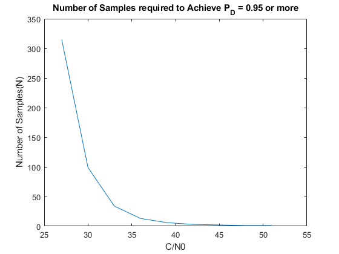
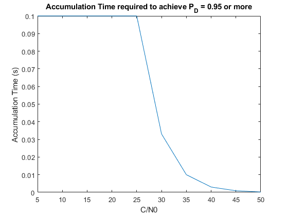

Contents
change N
clear; clc;
CN0 = [27,30,33,36,39,42,45,48,51];
Pd=1;
testN = flip([1:500],2);
for n = 1:length(CN0)
Pd=1;
for k = 1: length(testN)
s.C_N0dBHz = CN0(n);
s.N = testN(k);
s.PfaAcq = 0.0001;
s.Ta = 0.001;
s.fMax = 7000;
s.nCodeOffsets = 1023*5;
s.ZMax = 1000;
s.delZ = 0.1;
[pZ_H0,pZ_H1,lambda0,Pd,ZVec] = performAcqHypothesisCalcs(s);
if Pd <= 0.95
N(n) =testN(k)+1;
break;
end
end
end
figure,
plot(CN0,[N,1,1])
xlabel('C/N0')
ylabel('Number of Samples(N)')
title('Number of Samples required to Achieve P_D = 0.95 or more')

Change Ta
clear; clc;
CN0 = linspace(5,50,10);
testTa = flip([0.0001:0.0001:0.1]);
for n = 1:length(CN0)
Pd=1;
for k = 1: length(testTa)
s.C_N0dBHz =CN0(n);
s.N = 1;
s.PfaAcq = 0.001;
s.Ta = testTa(k);
s.fMax = 7000;
s.nCodeOffsets = 1023*5;
s.ZMax = 1000;
s.delZ = 0.1;
[pZ_H0,pZ_H1,lambda0,Pd,ZVec] = performAcqHypothesisCalcs(s);
if Pd <= 0.95
T(n) =testTa(k);
break;
end
end
end
figure,
plot(CN0,T)
xlabel('C/N0')
ylabel('Accumulation Time (s) ')
title('Accumulation Time required to achieve P_D = 0.95 or more')
fprintf(['Coherent integration is more efficient than noncoherent integration. \n' ...
'For C/N0 = 30, you require more 99 accumulations for the noncoherent \n' ...
'integration with accumulation time = 0.001 second, which means the total \n' ...
'accumulation time is 0.099 seconds. In contrast, coherernt integration \n' ...
'required only one accumulation for 0.0331 second to achieve PD = 0.95.'])
Coherent integration is more efficient than noncoherent integration.
For C/N0 = 30, you require more 99 accumulations for the noncoherent
integration with accumulation time = 0.001 second, which means the total
accumulation time is 0.099 seconds. In contrast, coherernt integration
required only one accumulation for 0.0331 second to achieve PD = 0.95.
